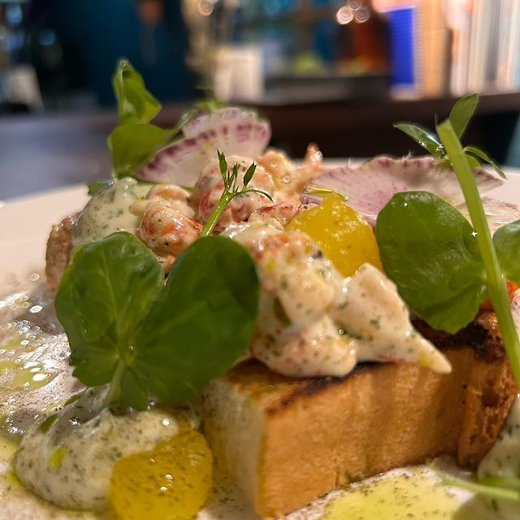

Lunchen bij Hoog Catharijne
Snel of uitgebreid lunchen aan Voor Clarenburg, tussen trein en winkels in.
- Snel lunchen: zeg bij het bestellen dat je haast hebt.
- Rustig en uitgebreid: neem de tijd, de keuken is open van 11.00 tot 16.00 uur.
- Zakelijke lunch: vlak bij het station, makkelijk af te spreken.
- Tijdens een dagje winkelen: even bijkomen tussen de plantjes.